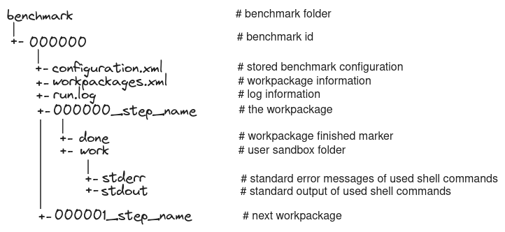

Introduction to JUBE
Objectives
get an basic overview of JUBE benchmark framework
compare benchmark and workpackage concept
The JUBE benchmarking environment provides a script-based framework for easily creating benchmark sets of the same or different applications. For each individual benchmark set, a configured parameter range is created and an analysis of these tests is provided after execution. For this purpose, the output data of the applications are analysed by automatic pre- and post-processing scripts that collect information and store it in a condensed form for manual evaluation. It is actively being developed by the Jülich Supercomputing Centre of Forschungszentrum Jülich, Germany.
How it works
Once excuted JUBE creates a directory for the benchmark run (relative to the position of the input file), which is created
if it does not already exist. This directory is important because it is the main interface for communicating with your benchmark.
It creates the log files run.log for many useful debugging outputs.
JUBE runs the benchmark for each configured parameter independently in a new environment called a workpackage. In the files
configuration.xmland workpackages.xml, it stores benchmark configurations and extended workpackage parameters.

Benchmark output
Runing benchmark produces next output on command line:
...